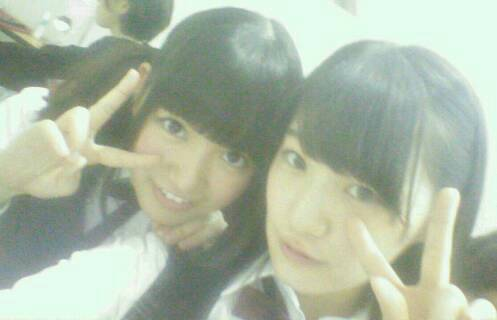
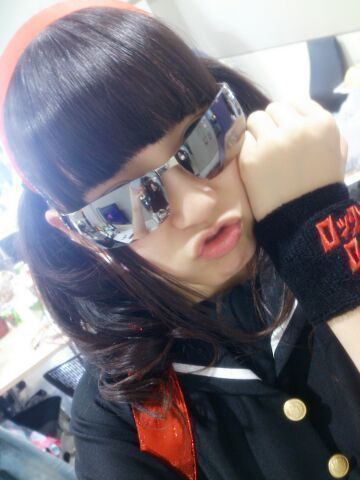

| 2014/04 15 Tue | ひめたん(*>ω<*)そ の434 |
先に言っておきます
多分過去最高の長さです（ ; ; ）
だからお茶でも飲みながら読んでね。
すたーと！
前回の記事は
たくさんのコメント
本当にありがとうございました！
たくさんの方に
お誕生日おめでとうしてもらえて
ひめたんほんとに幸せです。
13日は握手会してライブして
日記のたくさんのコメントを読んで
アイドルらしい誕生日だったなと思います＊＊
18さいになったひめたんも
どうぞよろしくお願いします
ひめたんびーむ(<・ω・>)
さて日曜日は全国握手会&アンダーライブでした！
たくさんの方に遊びに来ていただきました
本当にありがとうございました( ^O^ )
握手会は かなりん (中田花奈ちゃん)とぺあ

ひめたんびーむ ぺろぺろびーむ
気づいた方もいらっしゃったかもしれませんが
体調が万全ではなくて
申し訳なかったです(´；ω；｀)ごめんなさい
かなりんファンのみなさん
仲良くしてくださってありがとうございました
またぺあになったらよろしくです
ひめきゅんさんもありがとうねー
名札してくれるひと率も増えてきて
ひめは嬉しゅうよ！またよろしくねー♪
そして握手会のあとは
楽天さん主催で
アンダーライブをさせていただきました
ああなんて幸せなんでしょう(´；ω；｀)
私たちの今の実力を身を持って感じたのと同時に
今後の目標とかも見えてきたライブでした
アンダーライブは
私たちが考えて話し合って作り上げたものだから
本当に愛おしいというか
手作り感がたまらなく気持ちよかった(・∀・)
みんながそれぞれに
大切な思いがあるんですね＊＊
そうだなーひめたんの目線から
アンダーライブを語るとするならば
ほら、アンダーメンバーって
何かと悔しい思いをすることが多いんですよね
アンダーだってこんなに頑張ってるのに...とかね
だから今回アンダーだけでステージに
立つことができる環境を作って頂いたことが
本当に嬉しくて。
みんなのブログ見てたら
大変だったこととかもいろいろ伝わってくるけど
本番直前の私には断然わくわくが勝ってたなー
久々に緊張しました(´・ω・｀)
ライブなんてそう緊張することないこの私が。
この場を用意してくださった楽天さんと
スタッフさんと、それから
記念すべき第一回アンダーライブに
立ち会ってくれたファンのみなさんに
本当に感謝です。
ありがとうございました！
反省は次に活かしつつ
あの時の初心を忘れずに次回もがんばるので
5月のCD特典ライブもよろしくお願いします(^O^)
この様子は乃木ここさんが密着してたので
オンエア待ってて下さいねー♪
そして！！！
アンダーライブ終わった後も
ひめたんは寝れなかったよ！
今日は氣志團さんとの
対バンライブとゆーことで
乃木坂初バンド演奏を披露させて頂きました！
ボーカル: 能條 中元
ギター: 深川 川村
ベース: 中田
キーボード: 永島
ドラム: 飛鳥
の7人＼(^O^)／氣志團ならぬ乃木團！
愛未とのボーカルは
コウモリよの時から安定ぺあですね。
また一緒に歌えて嬉しいです
愛未ほんとにありがとう
愛未は忙しい一週間でしたお疲れさまね
アンダーライブの練習と並行して頑張ったんだよー
ひめたんは何だかんだで
歌うことがやっぱり好きみたいなので
今日はおなかいっぱい歌えて幸せでした
KISSESのみなさんには
お聴き苦しい演奏で申し訳なかったです
みなさんのあたたかさに救われました（ ; ; ）
乃木坂ファンのみなさん
楽しんでいただけたら幸いです
また披露する機会があったらいいなー♪♪
そしてなにより、このバンド挑戦を通して
新しい世界を知ることができました
きっかけを与えてくださった氣志團さん
本当にありがとうございました！
今回のバンド演奏をするにあたって
先生方やスタッフさんには
ものすごく支えられました
ありがとうございました
心が折れそうになった日もありましたが
今日は本当に楽しい演奏ができました！
バンドメンバーのみんな本当によくがんばったね
一緒にできて楽しかったよ( ´ ▽ ` )
よろしくーぶんぶんーとか言いながら
裏では結構 涙なみだの2週間でした
また是非やりたい！新曲やろうよ乃木團！

ちーっす└(┐卍^o^)卍ドゥルルル
そして氣志團さんのホスピタリティには
本当に頭が上がらないです。
また機会があったら
その時はもっと成長した姿を見せられるよう
がんばります！
そんな感じかな
コメント返しはまた次回するからね
楽しみに待っててくれたみんな
今日はごめんね(´・ω・｀)
ひめたんの日記の
コメント欄下２ケタに46を踏んだ方へ
手書きでコメ返するコーナー
＼ ひめたん46 ／

あっ
18さいにはなったけど
これからもびーむするしツインテールもするし
りぼんだって集めるんだからね！
よろしく！ぶんぶん
(＊´・ω・＊)
コメント(474)
2014/04/15 23:48